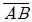
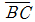
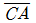
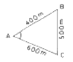
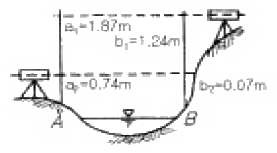
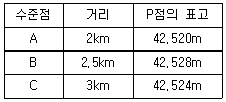

지적산업기사 (2005-03-20 기출문제)
1과목: 지적측량
1. 다음 오차의 종류 중에서 최소제곱법에 의하여 오차를 보정할 수 있는 것은?
- 누적오차
- 착오
- 정오차
- 우연오차
(정답률: 알수없음)

2. 특수한 성질의 오차로서 독립된 관측값의 정밀도를 나타내는데 사용되는 것은?
- 정준오차
- 허용공차
- 표준편차
- 연결오차
(정답률: 70%)
3. 지적측량에서 기초측량에 해당되지 않는 것은?
- 지적삼각보조측량
- 지적삼각측량
- 세부측량
- 지적도근측량
(정답률: 알수없음)
4. 지적도근측량에서 종선오차가 0.52m이고 종선차 절대치의 합계는 640m, 측선장의 총합은 700m이며, 오차를 배분할 측선의 측선장은 42m, 종선차는 26m일 때 배각법에 의해 오차를 배분할 측선의 종선차는?
- 2cm
- 3cm
- 4cm
- 5cm
(정답률: 알수없음)
5. 측판측량법에 있어서 도상에 영향을 미치지 않는 지상거리의 축척별 한계로 옳은 것은?
- 축척분모의 5분의 1 밀리미터
- 축척분모의 10분의 1 밀리미터
- 축척분모의 10분의 5 밀리미터
- 축척분모의 100분의 1 밀리미터
(정답률: 알수없음)
6. 측판측량을 도선법으로 시행할 경우 도선의 변수는?
- 10변 이하
- 20변 이하
- 30변 이하
- 40변 이하
(정답률: 알수없음)
7. 지적도근측량을 도선법으로 시행할 경우 사용할 수 없는 도선은?
- 결합도선
- 개방도선
- 왕복도선
- 폐합도선
(정답률: 알수없음)
8. 좌표면적계산법으로 면적을 측정할 경우 산출면적은 몇 제곱미터까지 계산하여야 하는가?
- 1000 분의 1
- 100 분의 1
- 10 분의 1
- 10000 분의 1
(정답률: 알수없음)
9. 지적도에 직경 3mm의 원을 제도하고 그 원의 내부에 +를 표시하는 지적측량기준점은?
- 지적측량도근점
- 지적삼각보조점
- 지적삼각점
- 1등 삼각점
(정답률: 알수없음)
10. 지적삼각보조측량을 할 때 지적삼각보조점은 어떠한 망으로 구성 되어야 하는가?
- 삽입망
- 삼각망
- 사각망
- 교회망
(정답률: 알수없음)
11. 경계점좌표등록부시행지역에서 지적도의 경계를 작성하는 방법으로 가장 적합한 것은?
- 직접자사법
- 좌표전개법
- 간접자사법
- 정밀복사법
(정답률: 알수없음)
12. 도면의 재작성방법으로 적합하지 않은 것은?
- 직접자사법
- 정밀복사법
- 간접자사법
- 전자자동제도법
(정답률: 50%)
13. 일반원점지역에서 축척별 1도곽의 포용면적으로 옳은 것은?
- 축척 1/500은 20,000m2
- 축척 1/600은 40,000m2
- 축척 1/1000은 120,000m2
- 축척 1/1200은 150,000m2
(정답률: 알수없음)
14. 지적삼각보조측량에서 23°, 40′, 15″의 역방위각은?
- 123°, 40′, 15″
- 203°, 40′, 15″
- 293°, 40′, 15″
- 113°, 40′, 15″
(정답률: 알수없음)
15. 축척 1/1,000인 지적도 지역에서 지적도근측량을 1등 도선으로 측정한 수평거리 총합계가 900m이었다. 이 도선의 연결오차의 허용범위는?
- 24㎝이하
- 30㎝이하
- 36㎝이하
- 42㎝이하
(정답률: 알수없음)
16. 지적삼각측량시 두 지점의 기지점에서 소구점까지 평면거리가 각각 4712m, 3912m 일 때 두 기지점에서 소구점의 표고를 계산한 교차는 얼마 이하인 경우 그 평균치를 표고로 하는가?
- 0.48m
- 0.50m
- 0.52m
- 0.54m
(정답률: 알수없음)
17. 측판측량을 교회법으로 실시할 경우 이에 대한 설명으로 적합하지 않은 것은?
- 전방교회에 의한다.
- 3방향이상의 교회에 의한다.
- 방향각의 교각은 30도이상 120도이하로 한다.
- 방향선의 도상길이는 10㎝이하로 한다.
(정답률: 알수없음)
18. 배각법으로 수평각을 관측할 때 처음 읽은 값이 59°, 59′, 04″이고 마지막으로 읽은 값이 179°, 55′, 15″이면 몇 배각인가?
- 2배각
- 3배각
- 4배각
- 5배각
(정답률: 80%)
19. 그림과 같은 삼각형에서

=400m,
=500m,
=600m일 때 각 A(∠BAC)는?
- 36°, 52′, 11.6″
- 41°, 24′, 34.6″
- 55°, 46′, 16.1″
- 63°, 25′, 26.1″
(정답률: 알수없음)
20. 세부측량을 경위의 측량방법에 의하여 실시할 때 기준으로 옳지 않은 것은?
- 연직각 관측은 정반 1회 관측한다.
- 수평각관측은 1대회의 방향관측법, 3배각의 배각법에 의한다.
- 도선법 또는 방사법에 의한다.
- 수평각 1방향각의 측각공차는 60초 이내로 한다.
(정답률: 알수없음)
2과목: 응용측량
21. 그림과 같이 교호수준측량을 실시하여 B점의 표고를 구한 값은? (단, HA = 20m이다.)

- 19.34m
- 20.65m
- 20.67m
- 20.75m
(정답률: 50%)
22. 원곡선의 반지름을 300m로 하여 노선의 중심말뚝을 40m 간격으로 설치할 때 중심말뚝 간격 40m에 대한 편각은?
- 1°, 54＇, 36＂
- 2°, 17＇, 20＂
- 3°, 49＇, 11＂
- 4°, 11＇, 20＂
(정답률: 알수없음)
23. 등고선의 성질을 설명한 사항 중 틀린 것은?
- 동일 등고선상의 모든 점들은 같은 높이에 있다.
- 경사가 급하면 간격이 넓고 경사가 완만하면 간격이 좁다.
- 같은 높이의 평면일 때 평행한 직선이다.
- 도면내외에서 폐합하는 폐곡선이다.
(정답률: 알수없음)
24. 1:25,000 지형도 상에서 산정에서 계곡까지의 거리가 45㎜이었다. 이때 산정의 표고는 520m, 계곡의 표고가 40m이라면 이 사면(斜面)의 경사는?
- 1 / 2.10
- 1 / 2.34
- 1 / 3.10
- 1 / 3.34
(정답률: 알수없음)
25. 터널에서 사용하는 도벨(DOWEL)의 용도로 옳은 것은?
- 갱내 기준점 표지
- 갱내 레이저 표지판
- 레일의 고정 장치
- 트랜싯 받침대
(정답률: 59%)
26. 항공사진의 특수 3점이 아닌 것은?
- 주점
- 연직점
- 등각점
- 중심점
(정답률: 알수없음)
27. GPS 측량에서 사용되는 좌표계는 무엇인가?
- UTM 좌표계
- WGS84 좌표계
- TM좌표계
- WGS80 좌표계
(정답률: 84%)
28. 다음 중 터널측량과 관계가 먼 것은?
- 터널중심선은 먼저 지상에 설치한다.
- 정도를 높이기 위할 때에는 트래버스법으로 중심선 측량을 실시한다.
- 터널내의 측점은 천정에 설치하는 것이 좋다.
- 터널의 급경사가 긴 심도측정은 데오도라이트로 실시한다.
(정답률: 알수없음)
29. 항공사진측량에서 사진의 주점을 맞추거나 화면거리를 조정하는 표정은 무엇인가?
- 접합표정
- 대지표정
- 외부표정
- 내부표정
(정답률: 알수없음)
30. 노선측량에서 곡선을 설치하려 할 때 가장 먼저 결정해야 할 요소는?
- 곡률반경
- 교각
- 접선장
- 곡선장
(정답률: 알수없음)
31. 다음 중 지자기측정의 3요소가 아닌 것은?
- 수평분력
- 편각
- 수평각
- 복각
(정답률: 알수없음)
32. 각 수준점에서 출발하여 P점의 높이를 직접 수준 측량한 결과 다음과 같다. P점 표고의 최확치는 얼마인가?

- 42.520m
- 42.523m
- 42.524m
- 42.528m
(정답률: 알수없음)
33. 도로의 노선측량을 하여 횡단면도를 작도하고 측점 1의 횡단면적은 230m2, 측점 2의 횡단면적은 320m2, 측점 3의 횡단면적은 280m2이었다. 측점 1에서 측점 3까지의 토량은 얼마인가? (단, 점간 거리는 20m)
- 11500m3
- 11800m3
- 11300m3
- 11700m3
(정답률: 55%)
34. 20m 테이프를 표준척과 비교 하였더니 2㎝가 늘어나 있었다. 이 테이프를 사용하여 어떠한 수평거리를 측정하니 240.50m 이었다면 실제 정확한 거리는?
- 239.06m
- 239.85m
- 240.74m
- 241.45m
(정답률: 알수없음)
35. 노선 중 완화곡선을 넣는 장소는?
- 직선과 직선사이
- 원곡선과 직선사이
- 반향곡선과 원곡선사이
- 반향곡선과 직선사이
(정답률: 알수없음)
36. 항공사진측량에서는 보통 경사각이 얼마 이내인 사진을 수직 사진으로 보는가?
- ±1°이내
- ±3°이내
- ±5°이내
- ±10°이내
(정답률: 알수없음)
37. GPS측량 중 1점 측위의 방법으로 위치를 결정할 때, 동시 관측이 요구되는 최소 위성 수는?
- 2대
- 3대
- 4대
- 5대
(정답률: 알수없음)
38. 건설현장 중 부지의 정지 작업을 위한 토량 산정 또는 저수지의 용량 등을 측정하는 데 주로 사용되는 방법은?
- 점고법
- 음영법
- 채색법
- 등고선법
(정답률: 알수없음)
39. 수준측량시 외업관측에서 야장을 기입하는 방법이 아닌것은?
- 승강식
- 고차식
- 배각식
- 기고식
(정답률: 알수없음)
40. 다음의 곡선 중 원곡선이 아닌 것은?
- 반향곡선
- 복합곡선
- 클로소이드곡선
- 단곡선
(정답률: 알수없음)
3과목: 토지정보체계론
41. 교통기관별 기종점 교통량 조사(O.D.조사)는 교통체계 계획 단계중 어느 단계에 해당하는가?
- 발생교통
- 분포교통
- 교통기관별 분담
- 배분교통
(정답률: 알수없음)
42. 주택 배치에서 남북간의 인동간격을 두는 가장 주된 이유는?
- 일조확보
- 화재방지
- 시계확보
- 통풍
(정답률: 알수없음)
43. 현행 도시개발사업에서 사업의 시행방식에 해당하지 않는 것은?
- 권한이전방식
- 토지 수용방식
- 환지방식
- 토지 사용방식
(정답률: 알수없음)
44. 다음 중 시가지 형태가 성운상(星雲狀)인 도시는?
- 대전
- 부산
- 마산
- 서울
(정답률: 알수없음)
45. 에베네저 하워드(Ebenezer Howard)의 이른바 전원도시가 최초로 건설된 곳은?
- 컴버놀드(Cumbernauld)
- 할로우(Harlow)
- 후크(Hook)
- 레취워스(Letchworth)
(정답률: 알수없음)
46. 현대 도시의 산업별 인구 구성비 중 가장 큰 값은?
- 제 1차 산업인구
- 제 2차 산업인구
- 제 3차 산업인구
- 기타인구
(정답률: 28%)
47. 시장 또는 군수가 도시관리계획에 관한 지형도면을 작성하여 도지사의 승인을 신청할 때의 도면축척으로 옳은 것은?
- 1/250 ‾ 1/600
- 1/500 ‾ 1/1500
- 1/600 ‾ 1/1700
- 1/1000 ‾ 1/2000
(정답률: 알수없음)
48. 야간 인구밀도를 중요시하는 용도 지역은?
- 상업지역
- 공업지역
- 주거지역
- 녹지지역
(정답률: 37%)
49. 우리 나라 도농복합형태의 시가 되기 위한 인구 규모로서 가장 타당한 것은?
- 인구 2만 이상
- 인구 3만 이상
- 인구 5만 이상
- 인구 50만 이상
(정답률: 알수없음)
50. 다음 중 상업지역을 세분한 것으로 잘못된 것은?
- 전용 상업지역
- 중심 상업지역
- 일반 상업지역
- 근린 상업지역
(정답률: 알수없음)
51. 도시화가 진행되는 단계 중 집적의 불이익이 가장 크게 나타나는 단계는?
- 도시화 단계
- 교외화 단계
- 재도시화 단계
- 역도시화 단계
(정답률: 30%)
52. 그리스도시의 특징이 아닌 것은?
- 민주적 성격을 지닌 자치도시
- 도시광장인 아고라
- 격자형 도시패턴
- 외곽지역의 종교건축군인 아크로폴리스
(정답률: 알수없음)
53. 금년도의 상주인구가 500만명인 도시가 있다. 10년 후의 추정인구는 얼마인가? (단, 연평균 증가율 r=3%, 등차급수에 의하여 증가한다.)
- 550만명
- 600만명
- 650만명
- 700만명
(정답률: 알수없음)
54. 지가의 특성에 대한 설명 중 옳지 않은 것은?
- 한번 오른 지가는 특별한 사유가 없는 한 내리는 일이 별로 없다.
- 인플레가 진행될 때는 지가가 급속히 상승하는게 보통이다.
- 공공시설의 설치로 지가는 언제나 상승한다.
- 미래의 개발이익이 예측되는 경우 지가는 미리 상승한다.
(정답률: 알수없음)
55. 도시구조에 관한 이론으로 동심원설(同心圓說)을 내놓은 학자는?
- H.Hoyt
- E.Burgess
- Harris & Ullman
- J.Simmons
(정답률: 알수없음)
56. 공업용지의 수요예측 방법으로 업종별 생산액 또는 종업원 수를 먼저 예측하고 생산액당 또는 종업원수 당 공장용지 소요기준 면적을 곱하여 총 수요를 예측하는 방법은?
- 표준공장 단위법
- 수요예측법
- 소규모 다단위법
- 원 단위법
(정답률: 알수없음)
57. 우리나라에서 국토의계획및이용에관한법률에 의해 설치되는 기반시설이 7가지로 분류되고 있다. 이중 공공·문화체육시설에 해당되는 것은?
- 도로
- 공원
- 시장
- 학교
(정답률: 알수없음)
58. 도로망 형식중 인구 100만명 이상의 대도시계획에 적합한 형태는?
- 대상형
- 방사환상형
- 격자형
- 방사형
(정답률: 알수없음)
59. 개발형태에 의한 도시재개발의 수법이 아닌 것은?
- 지구재개발
- 지구수복
- 지구보전
- 지구보수
(정답률: 알수없음)
60. 환지처분공고에 속하지 않는 항목은?
- 시행기간
- 사업의 명칭
- 환지예정일
- 사업비 정산내역
(정답률: 알수없음)
4과목: 지적학
61. 다음 중 소극적 지적제도를 채택하고 있는 나라는?
- 일본
- 대한민국
- 프랑스
- 호주
(정답률: 알수없음)
62. 지적법상 일필지 경계의 의미는?
- 자연적 경계
- 인공적 경계
- 법률적 경계
- 도상 경계
(정답률: 알수없음)
63. 다음 지목 설정에 대한 설명으로 옳지 않은 것은?
- 식용을 목적으로 죽순을 재배하는 토지는 전으로 한다.
- 늪과 같은 토지에 연이 자생하는 경우에는 답으로 보지 아니한다.
- 초지 조성허가를 받아 조성된 초지와 이에 인접된 축사는 목장용지로 한다.
- 수림지, 죽림지, 황무지 등의 토지는 잡종지로 한다.
(정답률: 알수없음)
64. 현대 지적의 성격으로 가장 거리가 먼 것은?
- 역사성과 영구성
- 전문성과 기술성
- 서비스성과 윤리성
- 일시적 민원성과 개별성
(정답률: 알수없음)
65. 우리나라 현행 토지대장의 특성이라고 할 수 없는 것은?
- 물권객체의 공시기능을 갖는다
- 인적편성주의를 채택하고 있다.
- 등록내용은 법률적 효력을 갖는다.
- 전산화일로도 등록·처리한다.
(정답률: 알수없음)
66. 우리나라의 현행 지목설정의 기준이라 할 수 있는 것은?
- 토성지목
- 용도지목
- 지형지목
- 자연지목
(정답률: 알수없음)
67. 지적도면을 작성할 경우 일반적으로 지켜야될 사항과 가장 거리가 먼 것은?
- 일정법칙을 따라 작성
- 정확하게 작성
- 쉽게 표현하여 작성
- 나만 알도록 작성
(정답률: 알수없음)
68. 다음 지적제도 중에서 토지정보시스템과 가장 밀접한 관계가 있는 것은?
- 세지적
- 경제지적
- 법지적
- 다목적지적
(정답률: 알수없음)
69. 다음 중 지번설정의 진행방향에 따른 분류가 아닌 것은?
- 단지식
- 오결식
- 사행식
- 기우식
(정답률: 알수없음)
70. 토지의 정확한 파악을 위하여 지번제도를 창설시킨 고려말기 토지제도는 무엇인가?
- 과전법
- 직전법
- 경무법
- 정전법
(정답률: 알수없음)
71. 지목설정의 원칙 중 틀린 것은?
- 1필1목의 원칙
- 주지목추종의 원칙
- 축척종대의 원칙
- 용도경중의 원칙
(정답률: 알수없음)
72. 우리나라 임야조사사업 당시의 재결기관으로 맞는 것은?
- 고등토지조사위원회
- 세부측량성적검사위원회
- 임야심사위원회
- 도지사
(정답률: 알수없음)
73. 조선말기 입안을 기피하고 백문매매가 성행한 이유가 아닌것은?
- 절차가 복잡하다.
- 관청에 출두를 요청했다.
- 비용이 과다 소요되었다.
- 임의신청 제도였다.
(정답률: 알수없음)
74. 지적공부를 상시 비치하고 누구나 열람할 수 있게 하는 공개주의의 이론적 근거가 되는 것은?
- 공신의 원칙
- 공시의 원칙
- 공증의 원칙
- 직권등록의 원칙
(정답률: 알수없음)
75. 다음 중 지적조사와 관련이 적은 것은?
- 경계조사
- 지형조사
- 지목조사
- 소유자조사
(정답률: 알수없음)
76. 모든 토지는 지적공부에 전부 등록하여 관리해야 한다는 지적제도의 원칙은?
- 다목적 지적
- 소극적 등록주의
- 지적 국정주의
- 적극적 등록주의
(정답률: 알수없음)
77. 우리나라의 토지등록 공시제도에 해당하는 것은?
- 지적제도와 등기제도
- 지적제도와 가옥제도
- 지적제도와 호적제도
- 지적제도와 지세제도
(정답률: 알수없음)
78. 다음의 토지 표시사항 중 지목의 역할과 가장 관계가 적은 것은?
- 토지 형질변경의 규제
- 사용 현황의 표상(表象)
- 구획정리지의 토지 용도 유지
- 사용 목적의 추측
(정답률: 알수없음)
79. 지적불부합 때문에 발생되는 사회적 측면의 영향과 가장 거리가 먼 것은?
- 토지분쟁의 빈발
- 거래질서의 문란
- 주민의 권리행사 용이
- 토지표시사항의 확인 곤란
(정답률: 100%)
80. 토지소유권 보장에 가장 적합한 지적제도는?
- 법지적
- 세지적
- 경계지적
- 과세지적
(정답률: 알수없음)
5과목: 지적관계
81. 현행 지적법에서 정하고 있는 지목의 종류는 모두 몇 개인가?
- 18개
- 21개
- 24개
- 28개
(정답률: 알수없음)
82. 시장, 군수, 구청장은 토지거래계약에 관한 허가구역 안에서 토지거래 허가신청서를 받은 날로 부터 최대 며칠 이내에 그에 관한 허가, 불허가 처분을 하여야 하는가 ?
- 7일이내
- 15일이내
- 20일이내
- 25일이내
(정답률: 알수없음)
83. 축척변경에 관하여 도지사의 승인을 얻은후 지체없이 공고해야 할 사항이 아닌것은?
- 축척변경의 시행에 관한 세부계획
- 축척변경의 시행에 따른 청산방법
- 축척변경의 시행에 따른 소유자 등의 협조에 관한사항
- 축척변경시의 이의신청 방법에 관한 사항
(정답률: 60%)
84. 경계점좌표등록부에 등록할 사항으로 잘못된 것은?
- 지목
- 토지의 소재
- 지번
- 좌표
(정답률: 알수없음)
85. 지적공부에 등록된 사항을 소관청이 직권으로 정정할 수 없는 것은?
- 토지이동정리결의서의 내용과 다르게 정리된 경우
- 지적측량성과와 다르게 정리된 경우
- 지적공부의 작성 또는 재작성 당시 잘못 정리된 경우
- 지적도 및 임야도에 등록된 필지가 위치의 이동이 없이 면적의 증감만 있는 경우
(정답률: 59%)
86. 다음 중 등기소에 대하여 청구할 수 없는 증명은?
- 어떤 부동산이 미등기라는 증명
- 어떤 사항에 등기가 없다는 사실의 증명
- 등기부등본의 기재사항에 변경이 없다는 사실의 증명
- 등기사항에 변동이 없다는 사실의 증명
(정답률: 알수없음)
87. 다음 중 소관청이 관할등기소에 등기를 촉탁할 수 있는 경우가 아닌 것은?
- 축척변경을 한 때
- 소관청이 직권으로 등록사항 정정을 한 때
- 행정구역의 개편으로 새로이 지번을 정한 때
- 토지소유자의 신청에 의하여 신규등록을 한 때
(정답률: 알수없음)
88. 환지처분의 공고가 있은 경우의 등기 절차로서 옳은 것은?
- 토지 소유자의 신청에 의한 등기
- 건설교통부장관의 촉탁에 의한 등기
- 사업시행자의 신청, 촉탁에 의한 등기
- 행정자치부장관의 촉탁에 의한 등기
(정답률: 알수없음)
89. 다음 중 민법이 규정하는 물권변동의 원인은?
- 몰수
- 유실물 습득
- 판결
- 경매
(정답률: 알수없음)
90. 건축법상 용어의 정의로 잘못된 것은?
- "신축"이라 함은 건축물이 없는 대지에 새로이 건축물을 축조하는 것을 말한다.
- "이전"이라 함은 건축물의 주요 구조부를 해체하지 아니하고 동일한 대지안의 다른 위치로 이동시키는 것을 말한다.
- "재축"이라 함은 천재지변등 재해에 의하여 멸실된 건축물에 대하여 그 대지안에 동일한 규모의 범위안에서 다시 축조하는 것을 말한다.
- "개축"이라 함은 기존 건축물의 전부 또는 일부를 철거하고 그 대지안에서 규모에 관계없이 건축물을 다시 축조하는 것을 말한다.
(정답률: 알수없음)
91. 다음 중 합병할 수 없는 것은?
- 합병하고자 하는 각필지의 지적도의 축척이 같을 때
- 토지의 지번부여지역이 같을 때
- 합병하고자 하는 토지가 같은 축척변경시행지역 안의 토지인 경우
- 합병하고자 하는 각필지의 지목은 같으나 일부 토지의 용도가 다르게 되어 규정에 의한 분할대상 토지가 있는 경우
(정답률: 알수없음)
92. 다음의 권리 중에서 부동산등기법상 등기 대상이 아닌것은?
- 점유권
- 지상권
- 지역권
- 임차권
(정답률: 알수없음)
93. 우리 민법이 취하는 의사표시의 효력발생시기 원칙은?
- 표백주의
- 발신주의
- 도달주의
- 회신주의
(정답률: 알수없음)
94. 중앙지적위원회에서 심의·의결할 수 있는 사항을 설명한 것으로 잘못된 것은?
- 토지등록업무의 개선
- 지적측량기술의 연구·개발
- 지적기술자격취득에 관한 사항
- 지적기술자의 징계
(정답률: 알수없음)
95. 지적공부의 등록사항을 말소시켜야 하는 경우는?
- 홍수로 인하여 하천이 범람하여 매몰된 토지
- 토지가 지형의 변화 등으로 바다로 된 경우로서 원상회복이 불가능한 경우
- 토지에 형질변경의 사유가 생길 경우
- 대규모 화재로 건물이 전소한 경우
(정답률: 알수없음)
96. 다음의 용도지역 중에서 건폐율(建蔽率)이 가장 낮은 지역은?
- 제1종전용주거지역
- 전용공업지역
- 준공업지역
- 준주거지역
(정답률: 알수없음)
97. 토지의 표시사항에 해당되지 않는 것은?
- 좌표
- 경계
- 토지의 소재
- 소유자의 주소
(정답률: 55%)
98. 지적법의 목적으로 가장 타당한 것은?
- 토지의 개발 및 등록절차
- 토지이용 계획수립 및 관리
- 토지소유권 설정으로 국민재산권 관리
- 토지를 지적공부에 등록하여 효율적인 토지관리 및 소유권 보호
(정답률: 알수없음)
99. 건축법에서 도로의 최소폭은 얼마인가?
- 3m
- 4m
- 5m
- 6m
(정답률: 알수없음)
100. 국토의계획및이용에관한법률상 문화재, 중요시설물 및 문화적·생태적으로 보존가치가 큰 지역의 보호와 보존을 위하여 필요한 때 지정되는 지구는?
- 경관지구
- 시설보호지구
- 보존지구
- 미관지구
(정답률: 알수없음)